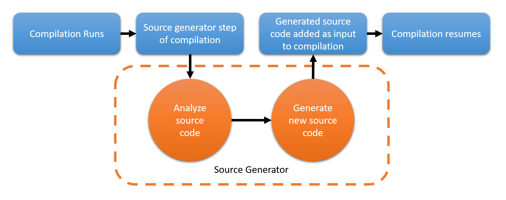
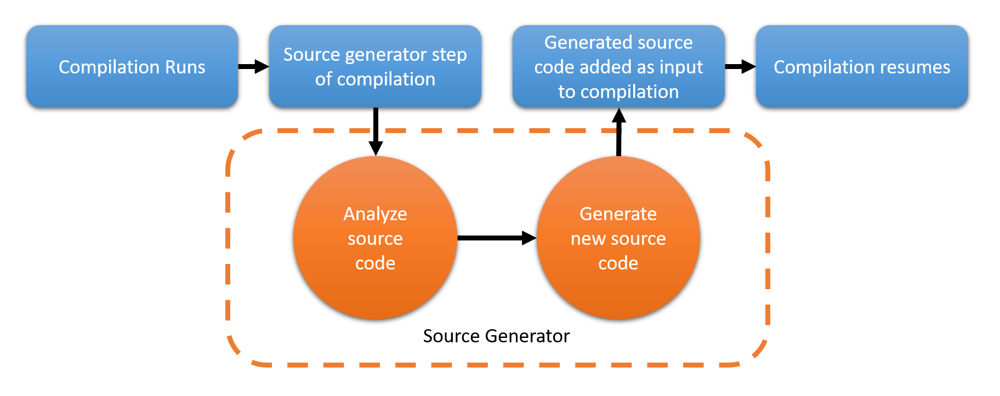

Welcome to RoslynAndInterceptors
Press space to navigate.
Press left arrow to go back.
Press right arrow to go forward.
Press space to navigate.
Press left arrow to go back.
Press right arrow to go forward.
For content please see up menu ▲
Online at https://ignatandrei.github.io/Presentations/RoslynAndInterceptorsprez.html
For download https://ignatandrei.github.io/Presentations/RoslynAndInterceptors.zip
For print ?print-pdf
For all slides press ESC
Online at https://ignatandrei.github.io/Presentations/RoslynAndInterceptorsprez.html
For download https://ignatandrei.github.io/Presentations/RoslynAndInterceptors.zip
System.Console.WriteLine("Ignat Andrei");
System.Console.WriteLine("RoslynAndInterceptors");
 Andrei Ignat http://msprogrammer.serviciipeweb.ro/
Andrei Ignat http://msprogrammer.serviciipeweb.ro/
YouTube 5 minutes .NET and tools : http://bit.ly/5MinTools
Book Making Open Source Component : http://bit.ly/NetOpenSourceComponent
Book Copy Paste from StackOverflow : https://amzn.to/2PQ8EDc
Roslyn Source Code Generators with examples : https://ignatandrei.github.io/RSCG_Examples/
Monthly meetings: https://www.meetup.com/Bucharest-A-D-C-E-S-Meetup/
For notes press SFor print ?print-pdf
For all slides press ESC
https://devblogs.microsoft.com/dotnet/introducing-c-source-generators/

Demo : Wait.sln , read from csproj data

Demo : Wait.sln , read from csproj data
Demo : RSCG_TimeBombComment.sln
var syntax = context
.SyntaxProvider.CreateSyntaxProvider(
predicate: (sn, _) => FindCorrectComment(sn),
transform: (ctx, _) => GetDataForGeneration(ctx)
)
.Where(it => it != null)
.SelectMany((it, _) => it!)
;